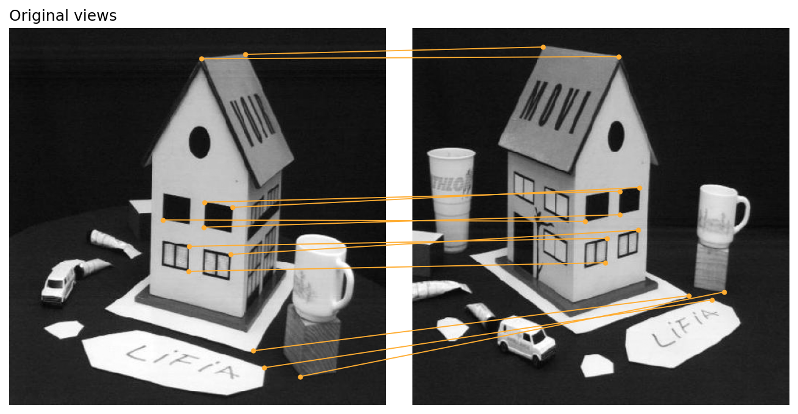
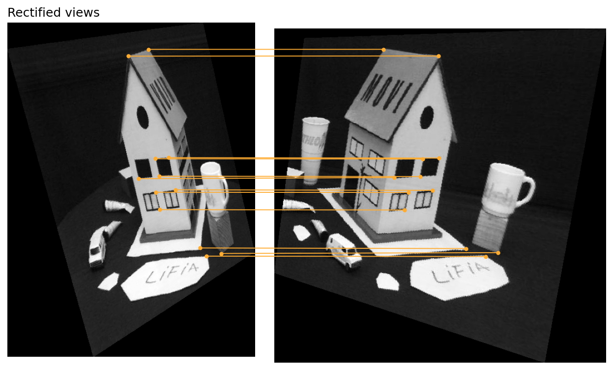

& Structure from Motion
SYDE 671 · Assignment 4 · James Xie
PART 2 · IMAGE
RECTIFICATION
Warp both views so corresponding epipolar lines lie on the same image rows.
(a) Epipoles
Estimate F using the normalized eight-point method on the 37 matches from Set 1. The last left singular vector of F gives e2, and that of FT gives e1. Divide by the last coordinate to express the finite epipoles as pixels.
With the full-precision coordinates, both relative null-space residuals are below 6 × 10−17.
(b) Rectifying homography
Translate the second image center to the origin with T, rotate the epipole onto the horizontal axis with R, and apply the projective transform G to send it to infinity. Translate back to obtain H2.
The mapped epipole has zero homogeneous weight and a vertical component below 5 × 10−18 after scaling its first component to one.
(c) Matching homographies
Build M = [e2]×F + e2vT, with v = (1, 1, 1)T. After applying H2M and H2 to each point set, solve a least-squares fit for the horizontal coordinate of the second view. The resulting affine transform HA changes only the horizontal coordinate, giving H1 = HAH2M.
0.97531733 0.33779455 10.02235970 -0.11474743 1.20854341 23.15059870 0.00074924 0.00017805 1.00000000
0.70292796 -0.10586153 69.36028980 -0.02613340 0.88172903 3.17681676 -0.00060702 0.00009142 1.00000000
Both matrices are displayed with the bottom-right entry scaled to one.
(d) Rectified image pair
I applied H₁ and H₂ to the two points in each match and converted them back to pixel coordinates. For the original and transformed points, I took the absolute y-coordinate difference and reported its mean and maximum across all 37 pairs.
I warped both views using inverse mapping and placed their output canvases on a shared vertical axis using the warp offsets. The overlays show 12 matches.
| Views | Mean (px) | Maximum (px) |
|---|---|---|
| Original | 33.5187 | 115.0000 |
| Rectified | 0.8568 | 3.8689 |




The near-horizontal lines let a stereo matcher search along the same row or within a narrow band around it. The remaining vertical separation reflects error in the fitted geometry and the input correspondences.